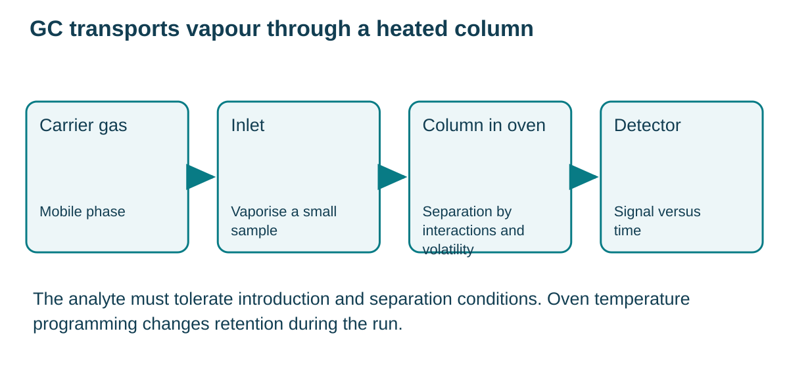
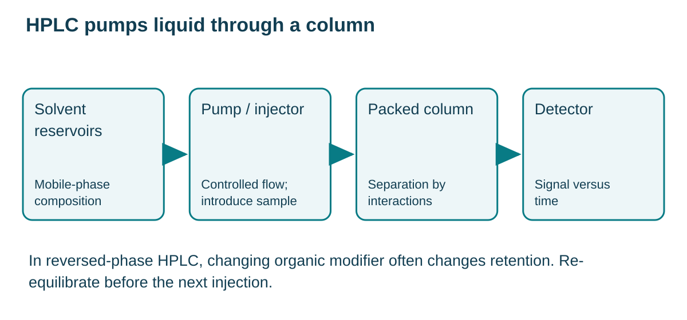
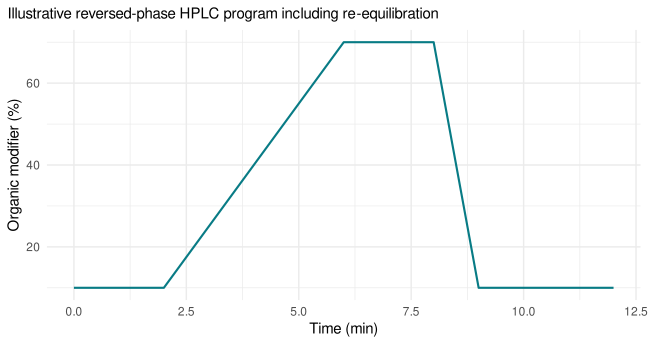
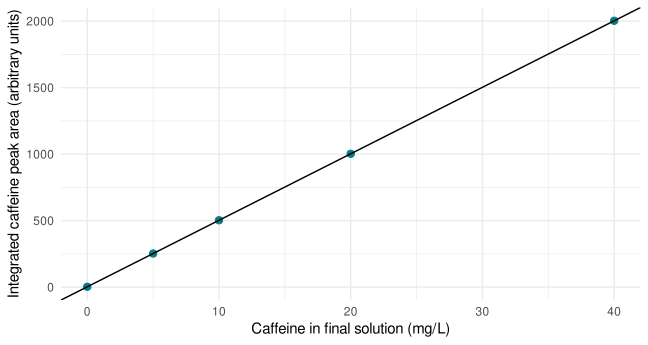
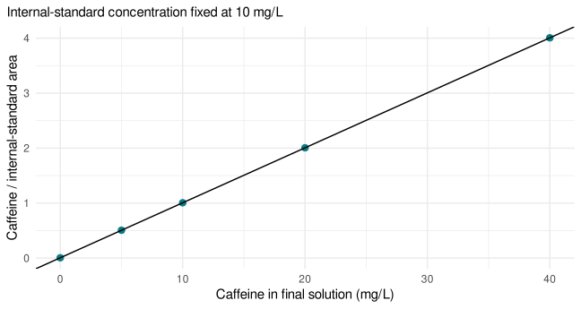

GC and HPLC
Choose an introduction and separation, then calibrate peak area
Both methods separate; their mobile phases differ

Different analytical questions call for elemental detection, molecular separation, titration or ion-activity measurement.
Can the analyte enter, survive and separate under the method conditions?
Follow the GC sample

The analyte must tolerate introduction and separation conditions. Oven temperature programming changes retention during the run.
Carrier gas → inlet → column in oven → detector.
Volatility is about the introduced analyte
The analyte must tolerate introduction and separation conditions. Oven temperature programming changes retention during the run.
A headspace method can sample volatiles above a nonvolatile matrix.
Temperature programming changes retention
The analyte must tolerate introduction and separation conditions. Oven temperature programming changes retention during the run.
Stationary-phase interactions also matter.
Follow the HPLC sample

In reversed-phase HPLC, changing organic modifier often changes retention. Re-equilibrate before the next injection.
Reservoir → controlled flow and injection → column → detector.
Reversed-phase conditions provide one interaction regime
In reversed-phase HPLC, changing organic modifier often changes retention. Re-equilibrate before the next injection.
A relatively nonpolar stationary phase meets a more polar mobile phase.
Isocratic and gradient methods ask different practical questions

An illustrative HPLC program rises from ten to seventy percent organic, then returns and re-equilibrates.
A gradient changes composition during a run.
Return to the initial conditions
An illustrative HPLC program rises from ten to seventy percent organic, then returns and re-equilibrates.
Which part prepares the next injection?
A detector is part of the selectivity
In reversed-phase HPLC, changing organic modifier often changes retention. Re-equilibrate before the next injection.
UV, flame-ionisation and mass-spectrometric responses are different.
Calibrate the integrated area

External HPLC calibration maps caffeine peak area to final-solution concentration from zero to forty mg/L.
Known caffeine in final solution: 0–40 mg/L.
Interpret the external model
External HPLC calibration maps caffeine peak area to final-solution concentration from zero to forty mg/L.
Area = 3 + 50 × concentration.
What if the injection introduces less solution?

Repeated injections give external estimates of fifteen and twelve mg/L, but ratio estimates near fifteen mg/L for both.
External area can change even when vial concentration does not.
Add a distinguishable internal standard

The ratio cannot repair coelution, analyte loss before standard addition, or different behaviour of analyte and standard.
Every final solution here has 10 mg/L internal standard.
A ratio can cancel a shared factor

The ratio cannot repair coelution, analyte loss before standard addition, or different behaviour of analyte and standard.
If both areas change proportionally, their ratio changes much less.
Calibrate the ratio under matched standard concentration

Caffeine-to-internal-standard area ratio is linear in concentration when internal-standard concentration is held fixed.
\(R=A_{caffeine}/A_{IS}=0.006+0.100c\).
Reuse the familiar model fit
fit_ratio <- lm(area_ratio ~ caffeine_mg_l, data = standards)
Compare the repeated injections

Repeated injections give external estimates of fifteen and twelve mg/L, but ratio estimates near fifteen mg/L for both.
Ratio estimates: 15.000 and 15.015 mg/L final.
Return to the original drink

The ratio cannot repair coelution, analyte loss before standard addition, or different behaviour of analyte and standard.
A tenfold dilution gives approximately 150 mg/L original.
A late standard cannot report an early loss

Added analyte may not behave like native bound analyte. A successful late spike cannot establish complete extraction of native material.
When was the internal standard added?
A ratio cannot repair overlapping peaks

The same component areas appear resolved or overlapping when their retention-time spacing changes.
An interfering compound can contaminate the analyte or standard area.
A ratio cannot make failed QC disappear

A blank, independent reference check and a sample spike examine different parts of the measurement.
I4 belongs to an unsatisfactory QC condition.
Encode the reporting decision
reportable <- resolved & qc_pass & in_range
Choose between plausible methods

Different analytical questions call for elemental detection, molecular separation, titration or ion-activity measurement.
Volatile solvent mixture versus a heat-sensitive, nonvolatile aqueous mixture.
Transfer the ratio calibration
Caffeine-to-internal-standard area ratio is linear in concentration when internal-standard concentration is held fixed.
Areas 903 and 600; same IS concentration; original dilution factor 5.
Take the reasoning into R
Open the student lesson.
Save the calculation and a chemical interpretation in your reproducible report.
Interactive experiment · Predict, change, explain.